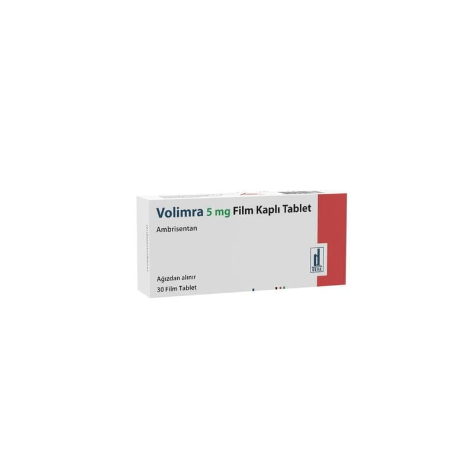

Volimra 5 mg Film Kaplı Tablet, 10 Adet

Ne için kullanılır
KT · Bölüm 1VOLİMRA her tablette etkin madde olarak 5 mg ambrisentan adı verilen etkin maddeyi içerir.
VOLİMRA, soluk pembe renkli, kare şeklinde, bikonveks film kaplı tablet olarak geliştirilmiştir.
VOLİMRA pulmoner arteriyel hipertansiyon (PAH) tedavisinde tek başına veya diğer ilaçlarla birlikte kombine olarak kullanılmaktadır.
PAH kalpten akciğerlere kan taşıyan kan damarlarındaki (pulmoner arterler) kan basıncının yüksek olmasıdır. PAH hastalarında bu damarlar daralır ve kalbin bu damarlardan kan pompalaması için daha fazla çalışması gerekir. Bu durum hastalarda yorgunluk, baş dönmesi ve nefes darlığı gibi belirtilere yol açabilir.
VOLİMRA pulmoner arterleri genişletir ve böylelikle kalbin bu damarlardan kan pompalamasını kolaylaştırır. Bu etki kan basıncını düşürür ve hastalık belirtilerini azaltır.